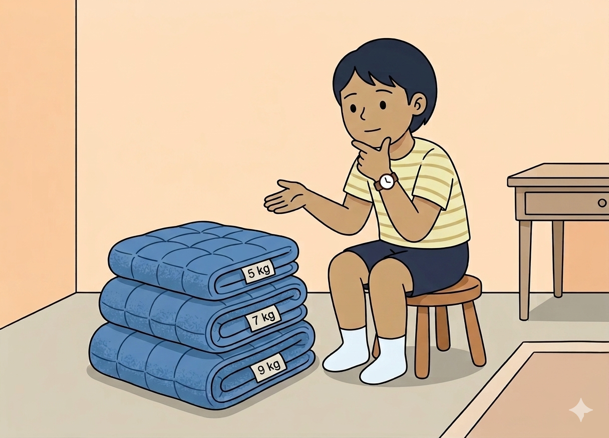

Hvad handler studiet om?
Bedre søvn med en tung dyne
Mange børn med ADHD og ADD har svært ved at falde i søvn og sove igennem. I forskningsprojektet Sweet BEAD undersøger vi, om en tyngdedyne (en vægtet dyne fra almindelig handel) kan give børn i alderen 5-12 år en mere rolig og sammenhængende nattesøvn.
Vi måler bl.a. barnets søvn, trivsel og ADHD-symptomer både før og efter, barnet har sovet med dynen. På den måde bliver vi klogere på, hvilke hjælpemidler der reelt hjælper børn med ADHD og søvnbesvær.
Projektet gennemføres på Bispebjerg og Frederiksberg Hospital - Parker Instituttet.
Hvem kan deltage?
Måske passer I lige ind
Dit barn kan muligvis være med i Sweet BEAD, hvis han eller hun:
- er mellem 5 og 12 år
- har en diagnose med ADHD eller ADD
- har søvnforstyrrelser
- har prøvet gode søvnvaner inden for de seneste 6 måneder - fx faste sengetider og mindre skærm før sengetid
- får eventuel ADHD-medicin og/eller melatonin i en stabil dosis (mindst 2 uger før start)
- kan sammen med en forælder eller værge forstå og tale dansk
Hvad indebærer deltagelse?
Sådan ser forløbet ud
Den samlede deltagelse varer ca. 5 uger - heraf sover barnet med tyngdedynen i 4 uger.
-
Telefonsamtale
Vi ringer og fortæller om projektet og hører, om I passer ind. I får mindst 24 timers betænkningstid, før I beslutter jer.
-
Startbesøg
På Frederiksberg Hospital - eller online - kan I stille spørgsmål og skrive under. I får et aktivitetsur, der måler søvn. Tager ca. 1 time.
-
7 nætter med søvnmåling
Barnet sover med aktivitetsuret i 7 nætter, før dyne-perioden begynder. Helt som en almindelig uge.
-
Vælg din egen dyne
Til et besøg prøver barnet de tilgængelige tyngdedyner og vælger selv den, der føles bedst.
-
4 uger med dynen
Barnet sover med dynen hver nat og bruger den ca. 10 minutter om eftermiddagen. I svarer kort dagligt via SMS, om dynen er brugt.
-
Afsluttende måling
Aktivitetsuret måler søvnen igen i ca. 14 nætter, og I udfylder et afsluttende spørgeskema. Derefter afleveres dyne og ur.

Kort fortalt
- ~5 uger
- samlet deltagelse, fra start til slut
- 4 uger
- med tyngdedynen - hver nat
- 2 besøg
- på hospitalet, hver ca. 1 time
- besvare
- spørgeskemaer - ved start og slut
Sådan tilmelder du dig
Vil dit barn være med?
Vil I høre mere? Skriv eller ring til os. Det er helt uforpligtende, og vi svarer gerne på alle spørgsmål, I måtte have.
Det er frivilligt at deltage, og I kan til enhver tid trække jer uden at give en grund. Det påvirker ikke jeres barns nuværende eller fremtidige behandling. Hvis du kontakter os på email, må du ikke skrive følsomme oplysninger i emailen, f.eks. CPR-numre eller oplysninger om helbred og sygdom. Ring istedet for eller send en emai, hvor du beder os om at ringe dig op.
Parker Instituttet, Nordre Fasanvej 57, 2000 Frederiksberg
Det formelle - kort fortalt
Trygt at deltage
Frivilligt & trygt
Deltagelse er helt frivillig, og I kan til enhver tid trække jer uden at give en grund. Tyngdedyner til børn over 3 år vurderes som et meget sikkert hjælpemiddel.
Fortrolige data (GDPR)
Alle oplysninger behandles fortroligt efter databeskyttelsesloven og EU's persondataforordning (GDPR). Du har som forsøgsperson ret til aktindsigt.
Godkendelser
Studiet bruger almindelige tyngdedyner - ikke medicinsk udstyr - og er fritaget for særskilt etisk godkendelse (Nationalt Center for Etik, jr.nr. F-25086236). Studiet følger dansk lovgivning.
Forsikring
Hvis der sker noget uventet under forsøget, er dit barn dækket af Patienterstatningen, og I har ret til at klage som patient - ligesom ved anden behandling.
Det er gratis at deltage. Du har ret til betænkningstid, før du beslutter dig, og du kan hente den fulde deltagerinformation eller få den tilsendt, før du underskriver et samtykke. Kontakt os ved spørgsmål.